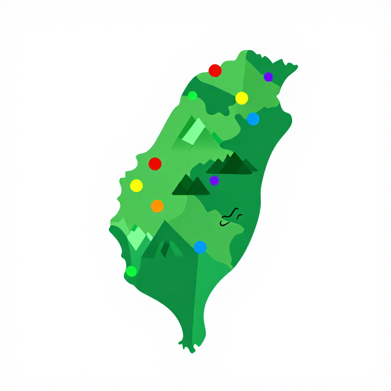

🐱⏰🌳
時光小貓咪咪的故事
過去的事，今天還在響
Level II｜5–8 歲
起點
你知道「很久很久以前」是多久嗎？
👴
過去
蹲下來（變小）
爺爺奶奶小時候，還有更久更久以前
🧒
現在
站起來
今天，你坐在這裡
🌟
未來
踮腳舉手
你長大以後，以後的小朋友
老師喊「過去！」→ 蹲下；「現在！」→ 站起；「未來！」→ 踮腳！
活動一
咪咪穿越時光機
認識「過去、現在、未來」三個時間概念
活動一・步驟 2
咪咪爺爺種了一棵樹
🌱
很久以前
爺爺種下一棵小樹苗
→
🌳
今天
大樹好高，咪咪在樹下睡午覺
過去的好事，今天還在讓我們開心！
全班一起：種樹（彎腰挖地）→ 長大（踮腳張開雙手）→ 樹下睡覺（手托腮）
活動一・步驟 3・學習單（投影版）
我的時光三格卡
在三格小卡上，畫出三個時間的「我」！
| 以前的我（小小的） | 現在的我 | 長大的我 |
|---|---|---|
畫完後和旁邊的同學說：「我以前最喜歡＿＿，長大後我想＿＿。」
活動二
誰被拿走了餅乾？
透過故事和遊戲，感受公平與不公平
活動二・步驟 2
B 小偶哭了
😢
不公平
A 小熊把 B 小熊的餅乾全部拿走了
B 小熊好難過、好傷心
😊
公平
大家都分得到
每個人都被好好對待
沒有人被欺負
全班一起做哭臉（手指點眼角）+ 說「好可憐～」
活動二・步驟 3
十六個山海好朋友家族
臺灣地圖 + 16 個小貼紙標記各族分布
使用正式臺灣底圖與教學標記

十六個山海好朋友家族
資料來源：原住民族委員會
活動二・步驟 4
對不起小魔法
😬
步驟 1
我拿走了你的玩具
🙏
步驟 2
「對不起，我還給你」
🤝
步驟 3
一起開心玩！
兩兩一組，練習說「對不起」並握手！
活動三
小小守護隊出發！
今天做對的事，會留給以後的小朋友
活動三・步驟 3
森林長大了！
圓形紙片示意圖，綠色佔約 60%
比例圖
森林長大了！
資料來源：林業及自然保育署 — 森林資源調查
活動三・補充
每年 8 月 1 日：原住民族日
8/1
每年
感謝最先住在這裡的朋友
臺灣 16 個原住民族群，很久以前就在這座島上照顧山和海。8 月 1 日這天，我們特別說「謝謝」。
全班一起鞠躬，說三次「謝謝！」
資料來源：原住民族委員會
活動三・步驟 4・學習單（投影版）
小小守護隊承諾卡
每人舉高貼畫，說：「我是咪咪守護隊，我要＿＿！」
我今天要做的一件好事是：
這件好事會讓誰開心：
以後的小朋友會因為我的行動：
守護隊員：
好朋友見證：
總結
三個關鍵字，一起記住
第 1 個
時間
過去的事還在影響今天
像石頭丟進水裡的圈圈
像石頭丟進水裡的圈圈
第 2 個
公平
「對不起」是修復小魔法
讓不公平變公平
讓不公平變公平
第 3 個
守護
今天做的小好事
是以後小朋友的大禮物
是以後小朋友的大禮物
拍手三下，大喊「我是小小守護隊！」